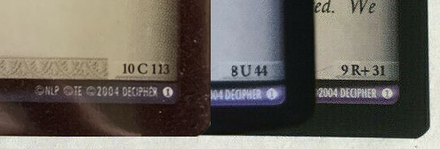

How to Price Unlisted Cards?
For cards which you cannot find listed historically some gut feelings will be involved, but in general there are some guidelines you can follow to help narrow down the ballpark of how expensive a given card should be.
Collector's Info
First, identify the ID of the card by looking in the lower right-hand corner for a code that looks like 1 R 1. The first number is the set number (0-19), the middle letter(s) are the rarity, and the third is the sequential ID number of the card.

Also take note of whether the card is a diffraction foil or not (if you have your hands on the physical card, rotate it in the light and see if you get a rainbow effect); not every card is available in foil, but most cards that were are quite a bit rarer than their non-foil counterparts.
Set Distribution
Now that you know what the set number is, you can make headway on figuring out a rough approximation of how much that set was printed.
The Lord of the Rings TCG was first released by Decipher in November 2001, who printed cards right up until the license expired in June 2007. That means that each set has been out of print for at least 14 years, and some longer.
There was large variability in how much each set was printed. Three sets were printed each year, with a tentpole ~365 card "base set" being followed by two ~121 "expansion sets". The base sets tended to be printed more than the expansions, and earlier sets tended to be printed more than later sets. In particular, the last two real sets (set 17: Rise of Sauruman / set 18: Treachery and Deceit) were plagued with delays and had an extremely limited run, meaning that completing collections of those sets was difficult even when first released.
Here is a list ranking each set approximately by availability, with relatively-common at the top and relatively-rare at the bottom:
- Set 1: Fellowship of the Ring (released 2001-11-06)
- Set 2: Mines of Moria (released 2002-03-06)
- Set 4: The Two Towers (released 2002-11-6)
- Set 11: Shadows (released 2004-11-03)
- Set 7: The Return of the King (released 2003-11-05)
- Set 19: Age's End (released 2007-06-01)
- Set 9: Reflections (released 2004-05-12)
- Set 6: Ents of Fangorn (released 2003-07-02)
- Set 12: Black Rider (released 2005-03-18)
- Set 13: Bloodlines (released 2005-08-12)
- Set 10: Mount Doom (released 2004-07-14)
- Set 8: Siege of Gondor (released 2004-03-10)
- Set 3: Realms of the Elf-lords (released 2002-06-19)
- Set 5: Battle of Helm's Deep (released 2003-03-12)
- Set 15: The Hunters (released 2006-06-09)
- Set 14: Expanded Middle-earth (released 2006-02-17)
- Set 16: The Wraith Collection (released 2006-08-26)
- Set 17: Rise of Sauruman (released 2007-03-01)
- Set 18: Treachery and Deceit (released 2007-05-01)
Set 0 is a special case, and nearly every card within that set was distributed in a different manner. Some of those are extremely common (such as the Three Hunters 0P12 - 0P14 that were packaged with DVD copies of the movies), and others are extremely rare (such as the LOTRO promos 0P62 - 0P67, which were mailed to individuals who participated in the Lord of the Rings Online TCG digital leagues).
At any rate, first
check the wiki to see if your card has its distribution method listed on the Collection tab, and if not (or if the information seems suspect), then ask about it on
the Facebook group.
Rarity
Now that you know broad strokes about how your card's set was distributed, it's time to narrow down how rare your card is within that set. In general, most cards are marked with a rarity of C (Common), U (Uncommon), or R (Rare), with each booster pack containing 7 commons, 3 uncommons, and 1 rare.
There are some additional rarities beyond this point, such as R+ (Rare Plus), RF (Rare Foil), and O (Legends Masterworks), which followed different rules about which boosters they would be randomly inserted into. In addition, standard foil cards for sets 1-10 were also distributed randomly in booster packs, replacing a common. Sets 11-18 followed a different foil distribution model that only foiled about 18 cards per set.
Details regarding the specifics of each rarity can be found on the Rarity article of the wiki here.
Gameplay Demand
Now, not all Rares are created equal. There exist some cards which are in high demand due to their gameplay prowess; you will never draw the same price with Weight of a Legacy as you will for the much-lauded Goblin Armory.
Unfortunately it's difficult to systematically address this aspect of pricing, and it simply will require you to get some experience under your belt, or ask someone you trust that's in the know. As always, asking on the Facebook group is a good starting point.
Putting it All Together
It takes experience and not a small amount of gut feeling to put all these factors together into a solid price, if you don't have historical data to go on. The best you can do is announce your best guess, and see how people respond. After all, asking is free.
Don't be discouraged if your first guess is wildly off, although you should be cautious of getting yourself ripped off. The community in general will watch your back, just make sure you get quotes from multiple sources and you should be golden.